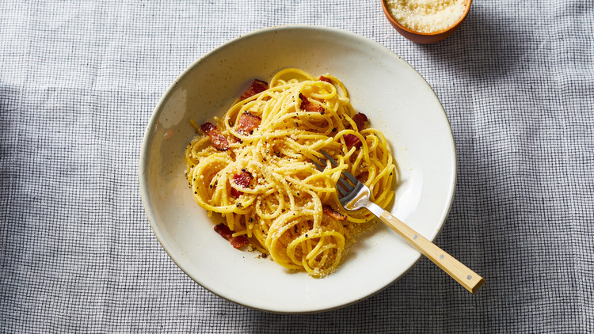

Pasta Carbonara

Description
If you can boil water, then making pasta carbonara is just a hop, skip, and a jump away. A quick dinner made from
six everyday kitchen staples, carbonara is a comfort food standby in Italian kitchens for good reason. As the spaghetti
cooks, you'll crisp up some pancetta in a skillet, whisk together eggs and cream on the side, and then toss it all
together with and grated Parmesan to create a silky, creamy pasta that is perfect for any day of the week.
Ingredients
- 1 tablespoon extra-virgin olive oil
- 4 ounces pancetta, guanciale, or bacon, sliced into 1/2-inch thick strips
- 1 large egg, plus 3 egg yolks
- 1/4 cup heavy cream
- Kosher salt and freshly ground black pepper
- 1/2 cup grated Parmigiano-Reggiano cheese, plus more for serving
- 1 pound spaghetti
Steps
- In a large skillet, heat oil and pancetta over medium; cook, stirring occasionally, until crisp and browned
around edges, 3 to 4 minutes. Using a slotted spoon, transfer to paper towels to drain. In a medium bowl,
whisk together egg, yolks, and cream; season lightly with salt and pepper.
- Meanwhile, cook pasta in a large pot of boiling salted water 1 minute less than package instructions.
Drain, reserving 1 1/2 cups pasta water. Add 1 cup pasta water to skillet; bring to a boil. Add pasta and
cook, stirring, until reduced slightly, about 2 minutes. Remove from heat.
- Slowly add egg mixture to pasta, stirring, until sauce thickens and clings to pasta. Stir in cheese and
pancetta; season generously with pepper and serve immediately with more cheese.